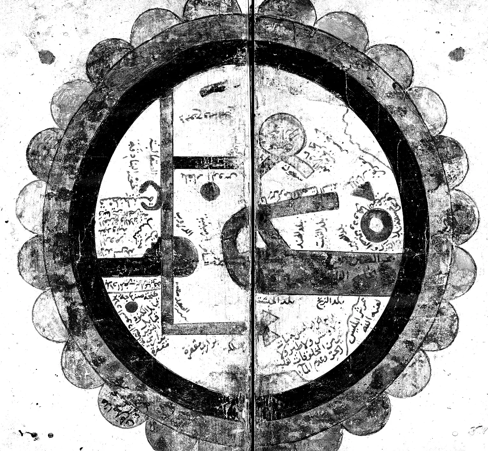
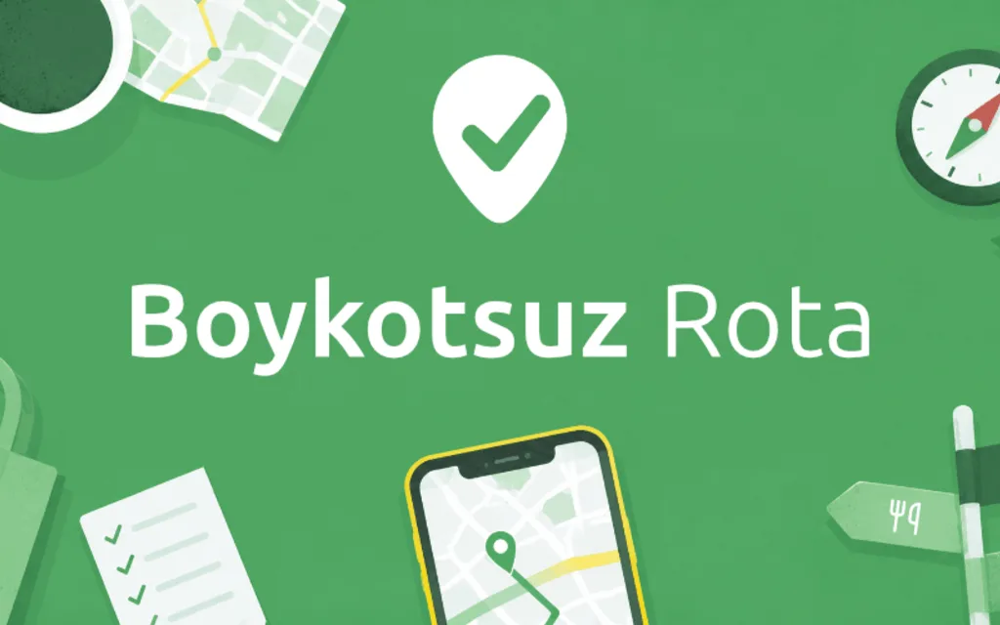
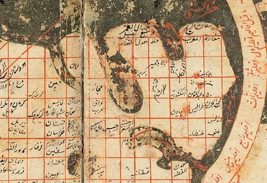

Anti-siyonist internet medyası: haber, düşünce ve tercüme.
- Haber
- Düşünce
- Tercüme

Projeler
Her proje bir çalışma grubunun ihtiyacından doğar. Beşi yayında, ikisi yapımda, üçü ekip bekliyor.
10 proje
Anti-siyonist internet medyası: haber, düşünce ve tercüme.

Direnişin şehitlerinden ve Filistinlilerden Arapça öğren.

Boykot listesindeki ürünleri satmayan işletmelerin haritası.
Siyonizmi kökeninden bugüne ele alan eğitim programı.
Türkiye'deki gençlerin ve öğrencilerin yazıları: We Are Not Numbers'a bir cevap.
Kongre bültenini telefonda rahat okunur hale getiren hafif okuyucu.
Filistin için çalışan kuruluşları alanına ve şehrine göre gösteren açık veri seti ve harita.
Siyonizmle ilgili davaların duruşma tarihlerini ve belgelerini bir zaman çizelgesinde toplar.
Filistin için yapılmış afişleri serbest lisansla ve baskıya uygun çözünürlükte sunar.
Suç duyurusu ve bilgi edinme başvurusu için adım adım rehber ve doldurulabilir şablonlar.
Bu aramaya uyan proje yok.

Çalışma gruplarının yazdığı, henüz kimsenin üstlenmediği altı fikir. Birini seçip ekibini kurabilirsin.
İktisat · Alışveriş sitelerinde boykot listesindeki markaları işaretleyen tarayıcı eklentisi.
Medya · Gazze'den gelen videoları gönüllü çevirmenlerle Türkçe altyazıya kavuşturur.
Aktivizm · Eylem düzenleyenler için telefon, hesap ve yazışma güvenliği rehberi.
Hukuk · Kamu kurumlarına yapılan bilgi edinme başvurularını ve yanıtlarını açık arşivde toplar.
Sanat · Türkçe ve Arapça harfleri birlikte taşıyan, afişler için serbest lisanslı bir yazı karakteri.
Sağlık · Gazze'ye ilaç gönderen kuruluşların güncel ihtiyaç listelerini tek yerde toplar.